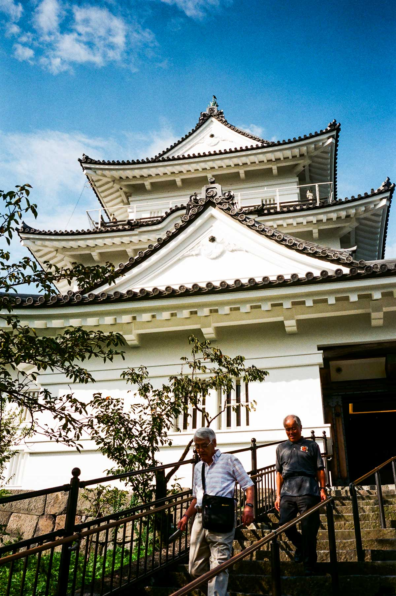

這天早上離開江之島旅館之後，便乘電車去鎌倉，剛好碰到學生通學班次，整架車塞滿學生，唯有再等12分鐘搭下一班電車。
鶴岡八幡宮
到了鎌倉後，步行至鶴岡八幡宮：這裏也是日劇拍攝場地，現實比劇中拍出來的鶴岡八幡宮寬闊。
行過長長的參道，要上樓梯才到八幡宮的正殿，從正殿回望參道，風景優美。
鶴岡八幡宮的由來與平安時代源氏淵源頗深，歷史由1063年至今，源頼義在由比ヶ浜海邊祭祀源氏的氏神源起，在1180年由源賴朝搬至現在地，一直保祐源氏。現在的八幡宮是在江戶時代末期興建。
看過正殿之後，下樓梯後來到旁邊的白旗神社，這裏是祭祀源頼朝和源實朝的。
然後我入了鎌倉国宝館參觀，這裏是很多彫刻和日本古文物，值得一看。離開国宝館後，到了一個荷花池，後面的建築物竟然是幼稚園。
再行前一點，我到了旗上弁財天社，這裏也是信奉弁財天信仰的神社，御守和朱印入手之後，一群鳥來到了神社參觀！
川喜多映画記念館 / 午餐
離開八幡宮之後，我到了附近的川喜多映画記念館，前天看到了黑澤明和三船敏郎展覽的海報，今天終於可以來參觀。
這裏展示了兩位日本電影名人合作作品的歷史、海報等等，館內有一個資料閣，有很多電影書籍，日本的電影迷應該很容易在這裏花一個下午吧！
看過展覽我去了附近一間餐廳吃早午餐，這裏是一間吃天婦羅和蕎麥麵的餐廳，午餐非常美味！
小町通り
小町通り是一條鎌倉的步行街，街的兩邊充滿特色小店，其實昨日去鏑木清方記念館時已經行過一次，不過今日的景象有點不同，有很多小學生。
我去到一間吃抹茶雪糕的店舖，買雪糕坐下，問店員點解有咁多小學生，她說是他們的「修學旅行」，每年秋天的這一個時間都是小學生的修學旅行，他們會選擇日本一個地方遊覽。
吃完雪糕，買過手信，是時候跟鎌倉說再見了，我回到了鎌倉駅乘JR去下一個目的地。
小田原

來到小田原駅，感覺和鎌倉很不同：小田原駅很大，有多條電車線，其中包括去箱根的。在小田原駅存放行李，往小田原城去！
小田原城在戰國時代屬於北条氏的領地，範圍很大，是在大平原上的城，由於範圍大而且有多層城牆，是易守難攻的城。
進入了小田原城公園的範圍，要再行十五至二十分鐘，才到達天守閣。
小田原城也是戰後重建的城堡，所以內部其實是石屎建築，城裏展覽了小田原城、北条氏和大久保氏的歷史，更加有影片介紹戰國時代的小田原合戰，講述小田原城如何久攻不下，最後豐臣秀吉的智謀令北条氏投降。

到達天守閣的頂層，風景非常優美。
離開小田原城後，我回到了小田原駅附近，這裏有一個比較隱蔽的地方，在小路裏立著北条氏政、氏照的墓所。

時間已經下午五點多，小田原只是中途站，是時候出發去今晚的住宿地：伊豆高原。
到達伊豆高原
從小田原坐JR到達伊東駅，再轉乘伊豆急行線，到達伊豆高原駅。
來到伊豆高原車站已經八點，附近的店舖都全部關閉，只有車站前的一間超級市場。由於事前沒有預計沒有餐廳，所以我在超級市場買了晚餐，便往旅館出發。
在Google Maps導航幫助下，行了約十五至二十分鐘，發現前路漆黑一片，一盞街燈也沒有，附近只有幾間民居，但好像都睡覺了。雖然有點害怕，但也只好靠手機的電筒照明，繼續向前走。
走過漆黑的最後一段路，轉一個彎，我終於到了今晚入住的溫泉旅館。旅館的老闆很好人，他建議我應該走另一條路，雖然距離較遠，但不會漆黑一片！我只可以無奈地說Google叫我行最短路程，我也沒有辦法。
付住宿費時，他問我有沒有一個500円方便找續，當時我也沒有足夠500円的輔幣，他就說收少我500円齊頭！然後他就介紹溫泉浴室和房間，還問我明天要去那裏遊覽。
入房後，我便開始吃超級市場買的晚餐、浸溫泉，很快便睡著了。